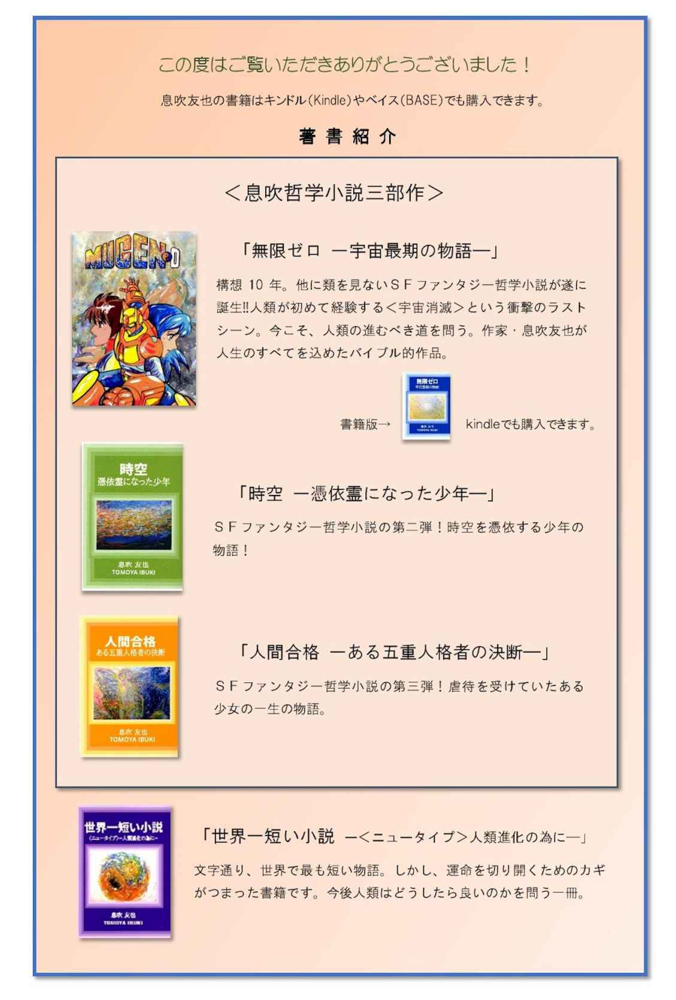
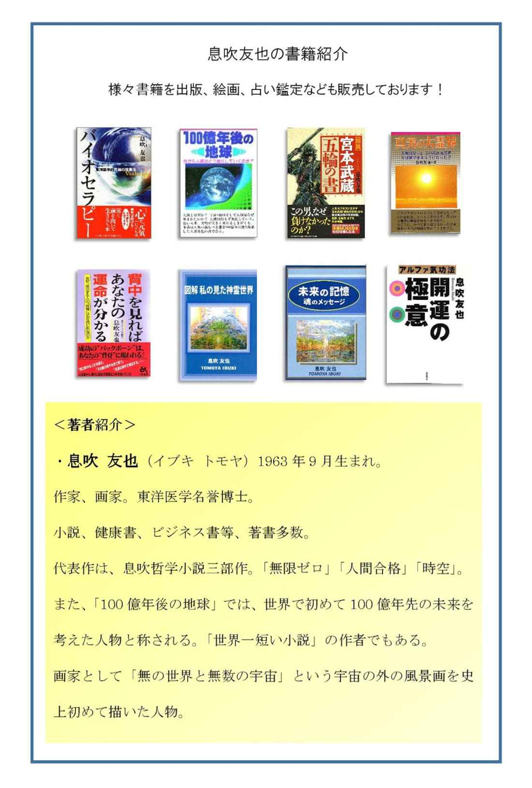
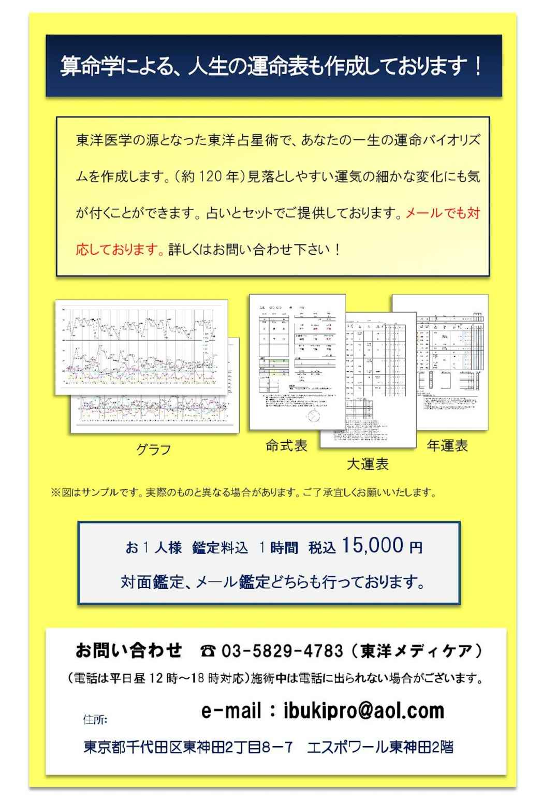
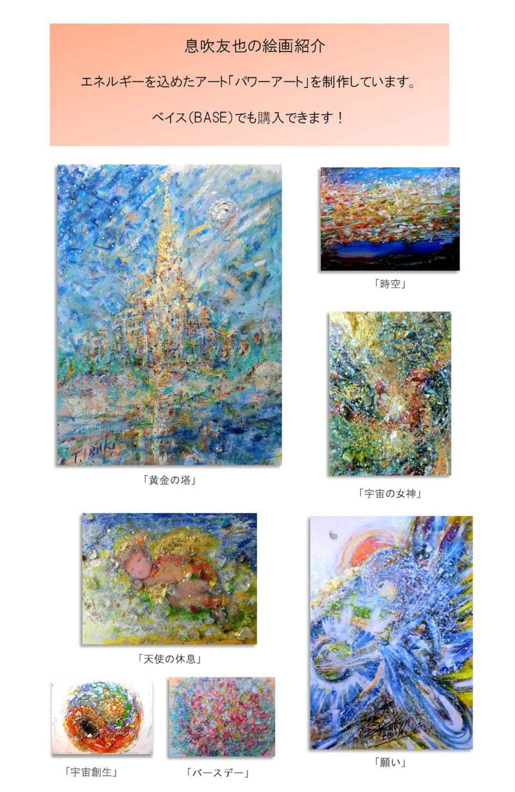

| 「天気の子」の修正点について: 息吹友也のストーリー考察 (考察文庫) | |
| 息吹 友也 | |
| yuugengaisyaibukipurodakusyon (2019) | |
息吹友也のストーリー考察
私は、長年小説を書いていて、アニメーターになりたかった過去がある為、アニメや映画等について、どうしても一言言いたくなるようです。
今回、新海誠監督作品「天気の子」を見て、私なりに、ここをもっとこうして欲しかった。という部分を書いてみます。
私個人の意見で申し訳ないのですが、前作の「君の名は。」は百点満点中、九〇点。今回は八〇点。
ちなみに私の中での最高点は、アメリカのＳＦ実写映画「インターステラー」の九五点です。
百点満点作品がないのは、いつか「インターステラ―」を越える作品が現われた時の為に取ってあります。
「君の名は。」が「インターステラー」より五点マイナスなのは、ラストに、三年もタイムラグがある、時空の違う主人公二人が、どうして出会ったのか？ 説明もなく、疑問が残るからです。
二〇一六年の人と、二〇一三年を生きる人が、どうして、三年の時間差を埋めたのでしょうか？
私は新海氏がまだ無名に近い頃から「この人はいずれビッグになる」と公言していました。「君の名は。」も公開初日に観て、「新海誠は、宮崎駿の後継者になる」と確信。
光とグラデーションにこんなに着目した映画作りをした人は、それまでいなかったと思います。
これからも、新海氏は、日本を代表する世界のトップクリエイターとして輝くでしょう。
その事を証明して見せた「天気の子」でした。
ですが、私から見て、なぜ「君の名は。」よりマイナス点なのか？
多くの映画を見た人々のレビューを見ると、「君の名は。」の前に「天気の子」を見ていたら良かった。という人が多いようでした。私も同意見です。
ではなぜ「君の名は。」を越えていないと判断した人が多かったのか？
それは『説得力』に尽きると思います。
特に後半。物語に説得力を持たせる配慮が足りなかったと思います。
では、どうしたら？
主人公の少女の前世が雨乞いだった、とか。それがないと、どうして彼女だけ鳥居をくぐっただけで晴れ女になれたのか？の設定が弱くなる。
なぜもう一人の主人公の少年が家出をしたのか？ いじめ、虐待、学歴社会......そんな背景が見えないと。
ラスト近く、なぜ少女の身体を消えさせたのか？ あそこは、身体はそのままで、意識不明、もしくは心臓が止まりそう......の方が良い。それでラストに、主人公の少年が鳥居に祈り、天国から少女の魂を連れ戻す。の方がスムーズに理解できる。そこで主人公の少年が見たのは、霊界の姿であり、天気を支配する龍神界であった方が、観客の期待を越えて来たと思います。そして、人間のせいで地球環境が瀕死状態と知る。人間の行動や精神は、地球環境と連動している。そこをこの映画の核となる『世界の秘密』にしないと。
三年間、東京が雨ばかりで水びたし、というのも設定として良くない。温暖化で南極の氷が溶けたから......にする。今、本当に起きている危機を描いてこそ、説得力が増す。
そして、欲を言うなら、どうして人が晴れを願うと晴れるのか？ その潜在意識のメカニズムまで切り込むと、『深い』作品となります。
なぜ人は願うのか？
主題歌の歌詞はとても素晴らしい。前作でも「人はなぜ苦しいのに笑うのか？ それは心がキミを追い越したから......」的な内容に、グサッと来ました。
今回は、「世界は苦しみだらけなのに、それでも人は願い続ける。」的な、最後に残るものは『愛』という真理に切り込んでいたように思います。
『願いの力』は、時に天気までも左右する力がある。心が純粋で魂の美しい者だけが、清らかな天と通じ、その者の純粋な願いだけが、天気を司る龍神に届く。その者は、純粋な故に、社会や人に傷付き、苦しみ、損をし、何も恵まれない。
だけど、その者は、決して人や社会を憎まず、恨まず、だたひたむきに、人々の為に祈る。自分の寿命や健康と引き換えに......。それが、天気を司る者に与えられた使命であり、晴れ女の真理。そのメカニズムまで表現して欲しかった。
主人公の少年は、社会システムと戦うというテーマがあると、新海氏は言っていました。ところが後半、社会システムや法律というより、天を相手にして、環境が壊れても良いから、少女に生きて欲しい、というように、目先が変わってしまいました。
通常、このような場面では、主人公は、皆の為に犠牲になって地球環境を救うものです。
この映画の結末だと、地球環境は守らなくても、二酸化炭素は出し続けても、自国だけが利益を生めば良い、とする変な先進国と同じになってしまいます。
後半に、自然環境、対、主人公になった事は、良くないなと思いました。
私なら、二つとも良い道を選ばせます。
つまり、知恵とバランスです。個人の欲望と自然環境の破壊で怒っている天「龍神」に対して、の解決法です。人がもっと自然と共に生きる、昔からの生活の大切さに気付くことです。自分の欲より、他人や、自然を大切に思う心。
少年が、少女の代わりに天に昇る覚悟をしたとき、運命が変わる。そこに、この映画の重要ポイントがあったと思います。
せっかく前半に母親を失なうという重要なシーンがあった少女なのに、そこをカットして、サラッと流したのは残念でした。これから小さい弟と二人で生き抜こうとする少女の覚悟が見たかった。
映画や小説は、感情を表現するものです。そこが、単なる参考書や説明書とは違うところです。
感情に訴え、観客の感情、魂までも、豊かにさせる。そんな力があります。
新海さま、次回作はぜひ、プロットの段階で私に見せてもらえませんか？ 説得力ある構成には、自信があります。
私の小説やマンガは、キンドルでも読めます。
「無限ゼロ」「人間合格」「時空」等がおすすめです。
四〇年近く、ストーリーを作ることに力を注いで来た私の意見が、少しでも皆さんのお役に立てたら幸いです。
最後に、私が何となく「前作の主人公たちが出てきたら面白いのに......」と考えていたら、出てきたので驚きました。
――― ＥＮＤ ―――
息吹 友也
息吹 友也（イブキ トモヤ）。一九六三年 九月生まれ。
作家、画家。東洋医学名誉博士。
小説、健康書、ビジネス書等、著書多数。
透視、未来予知、スプーン曲げ等の自らの体験した力を科学的に解明するため、＾28 ^歳より五年間、ソニーの超能力研究所（エスパー研究室）に被験者として研究協力。その能力は、人体科学会でも発表される。また、様々な有名企業の顧問や経営アドバイザーとしてもその能力を生かす。そして、潜在能力開発のセミナーを数多く開催。その法則により、自らも作家、マンガ家、画家、デザイナー、経営者、東洋医学治療家等、その思いを次々と現実化。日本バイオセラピー協会主宰、イブキプロ代表を務める。作家として『世界一短い小説＜ 悟り＞ 』を発表。
人類として初めて、宇宙の外の風景画『無の世界と無数の宇宙』を描く。近著には、哲学小説三部作『無限ゼロ』『人間合格』『時空』がある。著書『100 億年後の地球』は、人類で初めて100 億年先の未来を予測した人物として、新聞、雑誌、ラジオ等で取り上げられる。現在は、人の念が未来を引き寄せるために最も効果的なアイテムとして気を込めたヒーリングパワーアートの制作に力を入れている。ヒーリングパワーアートは、学研の雑誌通販でも話題に。



